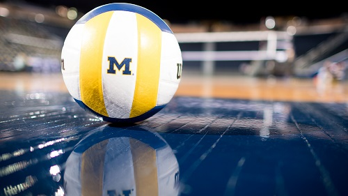

Volleyball
Võrkpall on sportlik pallimäng, kus kaks võistkonda võistlevad võrguga poolitatud väljakul. Võistlusmängu eesmärgiks on saata pall üle võrgu vastaspoole mängijate väljakule nii, et see maanduks vastase väljakupoolel, läheks vastasmängija puudutusest väljaku piiridest välja või vastasmängija eksiks reeglite vastu. Pall pannakse mängu serviga. Mängija peab suunama palli edasi ühe puutega, kas kaasmängijale või vastase väljakupoolele. Samas peab takistama palli maandumist oma väljakupoolel. Võrkpall on üks väheseid pallimänge, kus mängijal puudub vahetu kontakt vastasvõistkonnaga.
Natuke minust
- 17a
- poiss
- võrkpallur